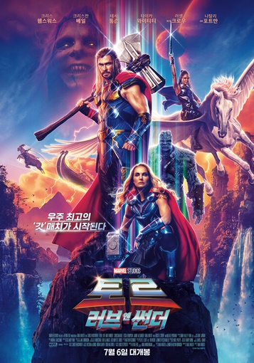

movie
- 현재상영작
- 개봉예정작
-

한순간의 실수도 용납되지 않는 하늘 위, 가장 압도적인 비행이 시작된다! 최고의 파일럿이자 전설적인 인물 매버릭(톰 크루즈)은 자신이 졸업한 훈련학교 교관으로 발탁된다. 그의 명성을 모르던 팀원들은 매버릭의 지시를 무시하지만 실전을 방불케 하는 상공 훈련에서 눈으로 봐도 믿기 힘든 전설적인 조종 실력에 모두가 압도된다. 매버릭의 지휘 아래 견고한 팀워크를 쌓아가던 팀원들에게 국경을 뛰어넘는 위험한 임무가 주어지자 매버릭은 자신이 가르친 동료들과 함께 마지막이 될지 모를 하늘 위 비행에 나서는데…
자세히보기 -

“신을 죽이는 자, 신이 상대한다!”슈퍼 히어로 시절이여, 안녕! 이너피스를 위해 자아 찾기 여정을 떠난 천둥의 신 ‘토르’ 그러나, 우주의 모든 신들을 몰살하려는 신 도살자 ‘고르’의 등장으로 ‘토르’의 안식년 계획은 산산조각 나버린다. ‘토르’는 새로운 위협에 맞서기 위해, ‘킹 발키리’, ‘코르그’, 그리고 전 여자친구 ‘제인’과 재회하게 되는데, 그녀가 묠니르를 휘두르는 ‘마이티 토르’가 되어 나타나 모두를 놀라게 한다. 이제, 팀 토르는 ‘고르’의 복수에 얽힌 미스터리를 밝히고 더 큰 전쟁을 막기 위한 전 우주적 스케일의 모험을 시작하는데...
자세히보기 -

산 정상에서 추락한 한 남자의 변사 사건. 담당 형사 '해준'(박해일)은 사망자의 아내 '서래'(탕웨이)와 마주하게 된다. "산에 가서 안 오면 걱정했어요, 마침내 죽을까 봐." 남편의 죽음 앞에서 특별한 동요를 보이지 않는 '서래'. 경찰은 보통의 유가족과는 다른 '서래'를 용의선상에 올린다. '해준'은 사건 당일의 알리바이 탐문과 신문, 잠복수사를 통해 '서래'를 알아가면서 그녀에 대한 관심이 점점 커져가는 것을 느낀다. 한편, 좀처럼 속을 짐작하기 어려운 ‘서래’는 상대가 자신을 의심한다는 것을 알면서도 조금의 망설임도 없이 ‘해준’을 대하는데…
자세히보기 -

“느낌 오지? 이 놈 잡아야 하는 거” 가리봉동 소탕작전 후 4년 뒤, 금천서 강력반은 베트남으로 도주한 용의자를 인도받아 오라는 미션을 받는다. 괴물형사 ‘마석도’(마동석)와 ‘전일만’(최귀화) 반장은 현지 용의자에게서 수상함을 느끼고, 그의 뒤에 무자비한 악행을 벌이는 ‘강해상’(손석구)이 있음을 알게 된다. ‘마석도’와 금천서 강력반은 한국과 베트남을 오가며 역대급 범죄를 저지르는 ‘강해상’을 본격적으로 쫓기 시작하는데...
자세히보기 -

통제불능의 존재가 세상 밖으로 나왔다! ‘자윤’이 사라진 뒤, 정체불명의 집단의 무차별 습격으로 마녀 프로젝트가 진행되고 있는 ‘아크’가 초토화된다. 그곳에서 홀로 살아남은 ‘소녀’는 생애 처음 세상 밖으로 발을 내딛고 우연히 만난 ‘경희’의 도움으로 농장에서 지내며 따뜻한 일상에 적응해간다. 한편, ‘소녀’가 망실되자 행방을 쫓는 책임자 ‘장’과 마녀 프로젝트의 창시자 ‘백총괄’의 지령을 받고 제거에 나선 본사 요원 ‘조현’, ‘경희’의 농장 소유권을 노리는 조직의 보스 ‘용두’와 상해에서 온 의문의 4인방까지 각기 다른 목적을 지닌 세력이 하나 둘 모여들기 시작하면서 ‘소녀’ 안에 숨겨진 본성이 깨어나는데…
자세히보기 -
프랑스 최고의 원예사 에브 베르네는 대를 이어 장미정원을 운영해오고 있다. 하지만 장미를 공산품 취급하는 사업가 라마르젤에 밀려 명성과 고객은 물론, 자신의 정원까지 모두 빼앗길 위기에 처한다. 신입 원예사를 뽑아 정원을 지키려 하지만 경력도 지식도 없는 초짜 직원들은 문제를 일으키기만 하는데... 과연 에브와 원예 초보 신입들은 정원을 구해낼 수 있을까?
자세히보기 -

도쿄 지역에서 동일한 방식의 엽기적인 연쇄 살인사건이 발생한다. 놀라운 것은 체포된 범인들이 하나같이 회사원, 교사, 경찰, 의사 등 평범한 사람들이라는 것. 평소 아무 문제가 없던 사람들이 똑같은 방식으로 살인을 저지른 것에 의문을 품은 다카베 형사(야쿠쇼 고지)는 이들이 모두 한 남자를 만난 후 범행을 저질렀다는 사실을 알게 된다.
자세히보기 -

미션 #1 나, 버즈 라이트이어. 인류 구원에 필요한 자원을 감지하고 현재 수많은 과학자들과 미지의 행성으로 향하고 있다. 이번 미션은 인류의 역사를 새롭게 쓸 것이라 확신한다. 미션 #2 잘못된 신호였다. 이곳은 삭막하고 거대한 외계 생물만이 살고 있는 폐허의 땅이다. 나의 실수로 모두가 이곳에 고립되고 말았다. 모두를 구하기 위해서 모든 것을 제자리에 돌려 놔야 한다. 미션 #3 실수를 바로잡기 위한 탈출 미션을 위해 1년의 준비를 마쳤다. 어쩌다 한 팀이 된 정예 부대와 이 미션을 수행할 예정이다. 우주를 집어삼킬 ‘저그’와 대규모 로봇 군사의 위협이 계속되지만 나는 절대 포기할 수 없다. 그런데… 여긴 또 어디지? 시간 속에 갇힌 건가?
자세히보기 -
빅샤크와 바닷속 친구들은 마법의 돌 매직스톤을 찾아 바다 끝 세계로 모험을 떠난다. 하지만 곧 엄청난 해저 소용돌이에 휩쓸리고 마는데 그 곳은 바로 전설 속 거대한 바다공룡이 사는 신비세계. 거대한 공룡과 살아있는 삼엽충, 대왕 바다전갈에 몬스터 물고기까지... 빅샤크와 친구들은 온갖 고생대 해양생물들의 위협을 피해 무사히 바다왕국으로 돌아갈 수 있을까? 스케일이 다른, 5억만년 전의 신비한 해저세계가 눈앞에 가득 펼쳐진다!
자세히보기 -

공룡들의 터전이었던 이슬라 누블라 섬이 파괴된 후, 마침내 공룡들은 섬을 벗어나 세상 밖으로 출몰한다. 지상에 함께 존재해선 안 될 위협적 생명체인 공룡의 등장으로 인류 역사상 겪어보지 못한 사상 최악의 위기를 맞이한 인간들. 지구의 최상위 포식자 자리를 걸고 인간과 공룡의 최후의 사투가 펼쳐진다.
자세히보기 -
세탁소를 운영하지만 늘 빚에 시달리는 ‘상현’(송강호)과 베이비 박스 시설에서 일하는 보육원 출신의 ‘동수’(강동원). 거센 비가 내리는 어느 날 밤, 그들은 베이비 박스에 놓인 한 아기를 몰래 데려간다. 하지만 이튿날, 생각지 못하게 엄마 ‘소영’(이지은)이 아기 ‘우성’을 찾으러 돌아온다. 아기가 사라진 것을 안 소영이 경찰에 신고하려 하자 솔직하게 털어놓는 두 사람. 우성이를 잘 키울 적임자를 찾아 주기 위해서 그랬다는 변명이 기가 막히지만 소영은 우성이의 새 부모를 찾는 여정에 상현, 동수와 함께하기로 한다. 한편 이 모든 과정을 지켜본 형사 ‘수진’(배두나)과 후배 ‘이형사’(이주영). 이들을 현행범으로 잡고 반 년째 이어온 수사를 마무리하기 위해 조용히 뒤를 쫓는다. 베이비 박스, 그곳에서 의도치 않게 만난 이들의 예기치 못한 특별한 여정이 시작된다.
자세히보기
-

극악무도한 폭파범 ‘플라먀’에 의해 교묘한 함정에 빠진 아무로 토오루! 모든 것이 베일에 가려진 ‘플라먀’, 유일한 단서는 아무로 토오루가 그의 경찰 동기들과 마지막으로 함께 했던 하루. 이와 동시에 결혼식의 신부가 된 경시청의 사토 형사는 불길한 예감을 감출 수 없는데…
자세히보기 -
세계 최고의 슈퍼 악당을 꿈꾸는 미니보스 ‘그루’와 그를 따라다니는 미니언들. 어느 날 그루는 최고의 악당 조직 ‘빌런6’의 마법 스톤을 훔치는데 성공하지만 뉴페이스 미니언 ‘오토’의 실수로 스톤을 잃어버리고 빌런6에게 납치까지 당한다. 미니보스를 구하기 위해 잃어버린 스톤을 되찾아야 하는 ‘오토’, 그리고 쿵푸를 마스터해야 하는 ‘케빈’, ‘스튜어트’, ‘밥’! 올여름 극장가를 점령할 MCU(미니언즈 시네마틱 유니버스)가 돌아온다!
자세히보기 -
2022년 현재, ‘가드’(김우빈)’와 ‘썬더’는 인간의 몸에 가두어진 외계인 죄수를 관리하며 지구에 살고 있다. 어느 날, 서울 상공에 우주선이 나타나고 형사 ‘문도석’(소지섭)은 기이한 광경을 목격하게 되는데.. 한편, 630년 전 고려에선 얼치기 도사 ‘무륵’(류준열)과 천둥 쏘는 처자 ‘이안’(김태리)이 엄청난 현상금이 걸린 신검을 차지하기 위해 서로를 속고 속이는 가운데 신검의 비밀을 찾는 두 신선 ‘흑설’(염정아)과 ‘청운’(조우진), 가면 속의 ‘자장’(김의성)도 신검 쟁탈전에 나선다. 그리고 우주선이 깊은 계곡에서 빛을 내며 떠오르는데… 2022년 인간 속에 수감된 외계인 죄수를 쫓는 이들 1391년 고려 말 소문 속의 신검을 차지하려는 도사들 시간의 문이 열리고 모든 것이 바뀌기 시작했다!
자세히보기 -

미국 남부 멤피스에서 트럭을 몰며 음악의 꿈을 키우던 19살의 무명 가수 ‘엘비스’. 지역 라디오의 작은 무대에 서게 된 ‘엘비스’는 어디서도 본 적 없는 몸짓과 퍼포먼스로 무대를 압도하고, 그에게 매료된 관객들에게 뜨거운 환호성을 받는다. 쇼 비즈니스 업계에서 일하던 ‘톰 파커’는 이를 목격하고 ‘엘비스’에게 스타로 만들어주겠다고 약속하며 함께할 것을 제안한다. 자신이 자라난 동네에서 보고 들은 흑인음악을 접목시킨 독특한 음색과 리듬, 강렬한 퍼포먼스, 화려한 패션까지 그의 모든 것이 대중을 사로잡으며 ‘엘비스’는 단숨에 스타의 반열에 올라선다. 그러나 시대를 앞서 나간 치명적이고 반항적인 존재감은 혼란스러운 시대 상황과 갈등을 빚게 되고 지금껏 쌓아온 모든 것이 한순간에 무너질 수 있다고 압박하는 ‘톰 파커’까지 가세해 ‘엘비스’는 그의 뜻과는 다른 선택을 하게 된다. 이로 인해 평생을 함께한 매니저 ‘톰 파커’와의 관계도 조금씩 어긋나기 시작하는데…
자세히보기 -
은퇴 후 성공적인 재테크로 호화롭게 생활하는 전설의 킬러 ‘의강’이 제멋대로 행동하는 여고생 ‘윤지’를 떠맡게 된다. 단기간 보호자 역할만 하면 될 거라고 가볍게 여긴 순간 ‘윤지’가 납치되는 사건이 일어나는데… “걔는 다치면 안 되는 아이야” 애써 잠재운 ‘의강’의 본능이 깨어난다!
자세히보기 -

당신을 따라다니는 공포 그들은 혼자가 아니다 남편의 죽음 이후, 마음을 치유하기 위해 평화롭고 아름다운 영국 시골 마을을 찾은 '하퍼' 어느 순간부터 집 주변의 숲에서 온 정체 모를 누군가, 아니 '무언가'가 그를 따라다니기 시작한다. 공포에 질린 '하퍼'는 마을 사람들에게 도움을 청하지만 경찰관, 목사, 바텐더, 심지어 어린 소년까지 그들 모두 기묘한 반응을 보이는데…
자세히보기 -

시대극 찐팬으로 영화 감독을 꿈꾸는 고교생 ‘맨발’. 영화 동아리에서 자신이 기획한 '무사의 청춘'이 탈락되자 직접 영화를 만들기 위해 절친 ‘킥보드’, ‘블루 하와이’와 드림팀을 결성한다. 우연히 극장에서 만난 미래에서 온 의문의 소년 ‘린타로’를 주인공으로 전격 캐스팅한 ‘맨발’은 꿈에 그리던 촬영을 시작하지만 예상치 못한 문제가 터지는데… 영화도, 꿈도, 사랑도 Ready Action! 최고의 청춘+로맨스x시대극÷SF 걸작이 온다!
자세히보기 -

그 누구도 실체를 몰라 `그레이 맨`으로 불리는 CIA의 암살 전문 요원이 우연히 CIA의 감추고 싶은 비밀을 알게 되고, CIA의 사주를 받은 소시오패스 전 동료에게 쫓기며 시작되는 액션 블록버스터
자세히보기 -
반드시 심판해야 한다! 단 한번의 실패도 실수도 용납할 수 없는 킬러 ‘알렉스’(리암 니슨) 어느 날, 그에게 새로운 의뢰가 들어온다. 오직 자신의 신념에 따라 움직인 그는 이 사건에 한 소녀가 연관되어 있음을 알게 되고 단칼에 거절한다. 의뢰를 거절했다는 이유로, 모두의 표적이 되어버린 그는 오래된 병으로 인해 희미해져 가는 기억을 붙잡고, 소녀와 자신을 지키기 위해 의뢰에 연관된 모든 것들을 응징하기로 한다. 한편, 멕시코 국경에서 사건을 맹렬히 쫓던 FBI 요원 ‘빈센트’(가이 피어스)는 ‘알렉스’를 만나게 되고, 두 사람은 이 사건의 거대한 비밀과 마주하게 되는데…
자세히보기 -
그리스로 혼자 휴가를 떠난 대학 교수 레다는 딸을 가진 젊은 여자 니나를 보고 단번에 시선을 빼앗긴다. 매일 같은 해변에서 시간을 보내며 서로를 응시하던 두 사람, 갑자기 니나의 딸이 사라지고 레다는 옛 기억을 떠올린다.
자세히보기 -

우리의 연애전선은 여전히 이상 無! … 無? 30살까지 ‘동정’이라는 이유로 사람의 마음을 읽는 마법사가 된 ‘아다치’와 이로 인해 7년 짝사랑의 진심을 들켜버린 ‘쿠로사와’는 그 누구보다 달달한 사내 연애 중이다. 하지만 비밀스럽고도 행복한 시간도 잠시, ‘아다치’의 갑작스러운 전근으로 장거리 커플이 된 둘은 연애 최대 위기를 맞게 되고, 서로가 없는 미래는 상상할 수 없다는 것을 깨닫게 된다. 두근거리는 동거의 시작… 이대로 평생 함께? 알콩달콩한 동거 생활이 시작됐지만, 두 사람의 사랑은 여전히 산 넘어 산! 우리 연애 이대로 괜찮을까…?
자세히보기 -

돼지, 소, 닭의 평온한 일상은 인간을 대자연의 세계로 초대한다
자세히보기